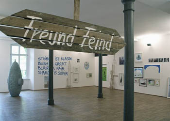

|
|
|
set
SET - A Studio Report
June 11 - July 30, 2004
"SET - A Studio Report" shows works of artists represented by Kuckei + Kuckei. There are completed works on display as well as more temporary, roughly sketched material. The show focusses ? last but not least by its way of presentation ? on the element of investigation and presents material usually withheld from a public exhibition. The spectrum ranges from drawing, painting and photography via computer animation and colour print to graffiti and wooden object.
Participating artists: Ingmar Alge, Oliver van den Berg, Anne Berning, Joseph Biel, Hlynur Hallsson, Jörg Lange, Michael Laube, Lois Renner, Gösta Röver, Matten Vogel, Gerhard Winkler
Kuckei + Kuckei
Linienstraße 158
D-10115 Berlin
Tel.: +49 - 30 - 883 43 54
Fax: +49 - 30 - 886 83 244
|
SET - Ein Werkstattbericht
11. Juni bis 30. Juli 2004
Die Ausstellung "SET - Ein Werkstattbericht" zeigt Arbeiten von Künstlern der Galerie Kuckei + Kuckei. Zu sehen sind sowohl einzelne abgeschlossene Arbeiten, als auch vorläufiges, eher skizzenhaftes Material. Nicht zuletzt durch die Art der Präsentation steht hierbei das untersuchende Element im Vordergrund. Die Ausstellung zeigt manches was einer öffentlichen Ausstellung normalerweise vorenthalten bliebe. Hierbei reicht das Spektrum von der Zeichnung über Collage, Malerei, Fotografie, Computeranimation und Farbausdruck, bis zu Graffiti und Holzobjekt.
Beteiligte Künstler: Ingmar Alge, Oliver van den Berg, Anne Berning, Joseph Biel, Hlynur Hallsson, Jörg Lange, Michael Laube, Lois Renner, Gösta Röver, Matten Vogel, Gerhard Winkler
Kuckei + Kuckei
Linienstraße 158
D-10115 Berlin
Tel.: +49 - 30 - 883 43 54
Fax: +49 - 30 - 886 83 244
|
 |
 |